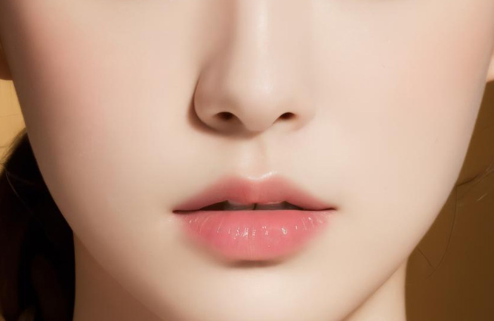
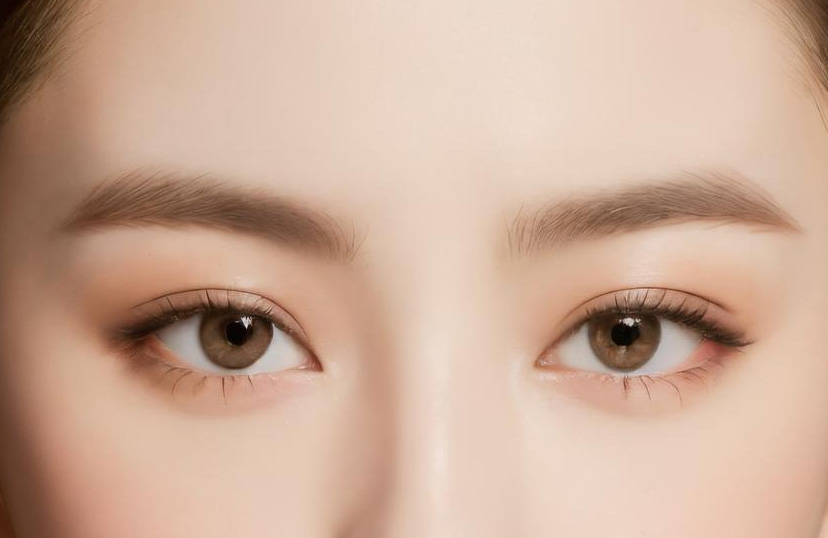
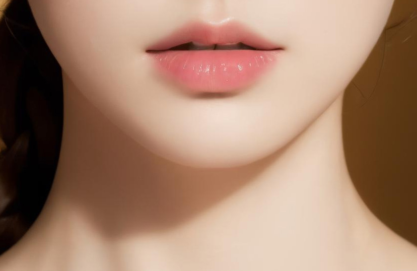
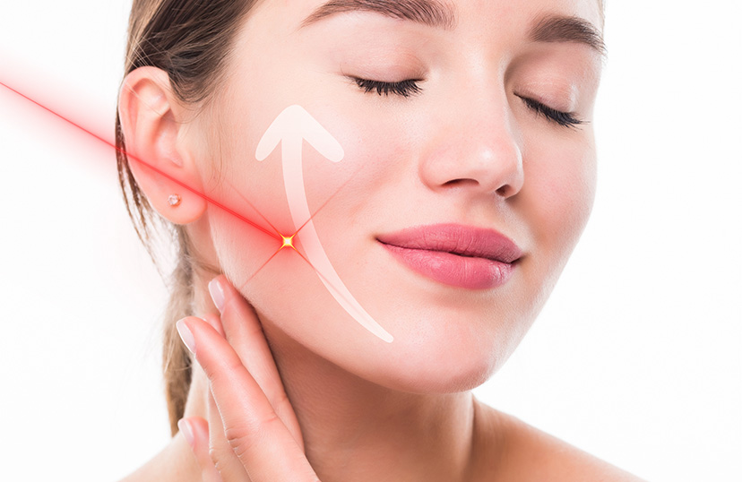
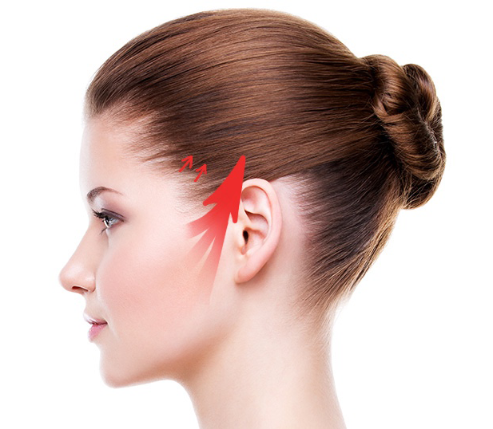
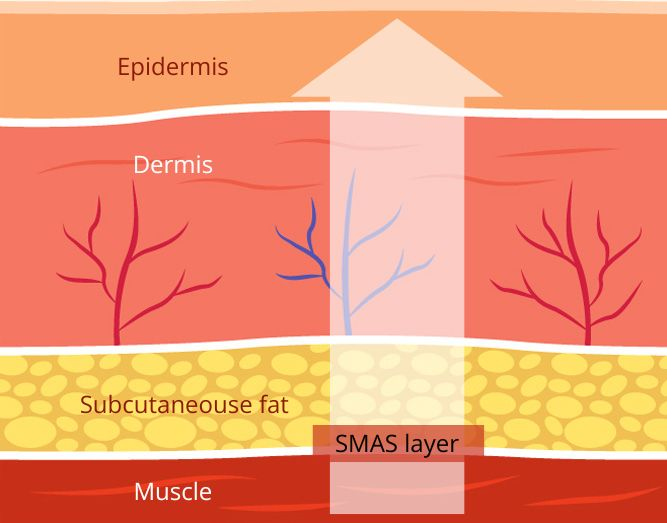
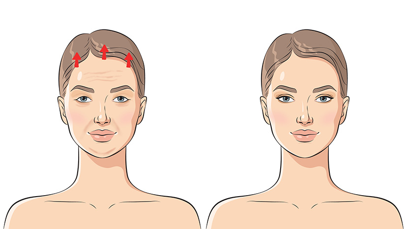

แกรนด์ นิว ไลฟ์ ศูนย์ปรึกษาศัลยกรรมเกาหลี และบริการ พาไปศัลยกรรมเกาหลี โรงพยาบาลชั้นนำ ถูกกฎหมาย ไทย - เกาหลี
จากประสบการณ์การทำศัลยกรรม ที่เกาหลีด้วยตัวเองและด้วยการดูแลเคสลูกค้ามาตลอด มากกว่า 8 ปี
สอบถามรายละเอียด
จากประสบการณ์การทำศัลยกรรม ที่เกาหลีด้วยตัวเองและด้วยการดูแลเคสลูกค้ามาตลอด มากกว่า 8 ปี
สอบถามรายละเอียดเมื่อกาลเวลาผ่านไป สภาพผิวของเราก็เริ่มเปลี่ยนตาม ทั้งความเต่งตึงที่เริ่มถูกแทนที่ด้วยความเหี่ยวย่น หรือการเพิ่มขึ้นของริ้วรอยและตีนกาบนส่วนต่าง ๆ ของใบหน้า ทำให้ใบหน้าของเราเริ่มดูแก่เกินกว่าอายุจริง จนมักถูกหลายคนทักผิด ดังนั้น เพื่อให้ภายนอกของคุณอ่อนเยาว์เท่าภายใน การศัลยกรรมยกกระชับชะลอวัยคือคำตอบ อย่าปล่อยให้ใบหน้าของคุณแก่เกินอายุ เพราะคุณสามารถคงความเยาว์นี้ไว้ตลอดไปได้
รู้หรือไม่ว่า ใบหน้าของเรานั้นประกอบด้วย 3 ส่วน คือ ใบหน้าส่วนบน ใบหน้าส่วนกลาง และใบหน้าส่วนล่าง และแต่ละส่วนของใบหน้าเราก็มีแนวโน้มที่จะเกิดริ้วรอยความเหี่ยวย่นที่แตกต่างกัน เนื่องจากหน้าที่และโครงสร้างที่แตกต่างกัน
ใบหน้าส่วนบนของเราที่ประกอบไปด้วย หน้าผาก คิ้ว และดวงตา นั้นมักเกิดริ้วรอยความเหี่ยวย่นจากอายุที่มากขึ้นในรูปแบบของเส้นหน้าผาก ร่องระหว่างคิ้ว และรอยตีนการอบดวงตา เส้นและรอยเหี่ยวย่นเหล่านี้ มีสาเหตุหลักมาจากการแสดงออกทางสีหน้าซ้ำ ๆ เช่น การขมวดคิ้วและการหยีตา ซึ่งนำไปสู่การสลายตัวของคอลลาเจนและอีลาสตินในผิวหนัง
ใบหน้าส่วนกลางของเรารวมส่วนของแก้ม และบริเวณรอบจมูกและปาก ดังนั้น เมื่อเราอายุมากขึ้น เรามักจะสูญเสียมิติในบริเวณนี้ เนื่องจากไขมันและคอลลาเจนที่ลดลง ซึ่งจะส่งผลให้เกิดร่องแก้ม และร่องน้ำหมาก นั้นเอง
ใบหน้าส่วนล่างของเรา ได้แก่ กราม คาง และคอ ลักษณะที่แสดงถึงอายุที่มากขึ้นในบริเวณนี้
คือ ผิวหนังหย่อนคล้อย สูญเสียความคมชัดของแนวกราม และเกิดความหย่อนคล้อยบริเวณใต้คางและลำคอ
หลายคนที่เริ่มมีปัญหาผิวหน้าหย่อนคล้อย และเริ่มมีริ้วรอยและตีนกา ตั้งแต่อายุยังไม่มาก เป็นสัญญานบ่งบอกว่าคุณกำลังมีใบหน้าที่แก่ขึ้นกว่าวัย เพราะฉะนั้น การศัลยกรรมชะลอวัยเป็นสิ่งที่คุณสามารถเริ่มทำได้ตั้งแต่ตอนนี้ เพื่อล็อคความอ่อนเยาว์ของคุณไว้ อย่าปล่อยให้ริ้วรอยนำหน้าอายุของคุณ
การยกกระชับด้วยเลเซอร์ เป็นทางเลือกที่น่าสนใจสำหรับผู้ที่กลัวการผ่าตัดหรือผู้ที่ไม่สามารถพักฟื้นหลังจากการศัลยกรรมได้นาน ด้วยการใช้ลำแสงเลเซอร์ที่มีความเข้มสูงในส่วนที่ต้องการยกกระชับ ลำแสงเลเซอร์สามารถทำลายเซลล์ไขมันในพื้นที่นั้น ๆ ทำให้เกิดกระบวนการลดไขมันและยกกระชับผิวในพื้นที่ที่เคยหย่อนคล้อง เพราะผิวจะถูกกระตุ้นให้สร้างคอลลาเจนขึ้น ทำให้ผิวดูเต่งตึงมากขึ้น ชนิดเลเซอร์ที่เป็นที่นิยมในขณะนี้ ได้แก่ Ulthera THERMAGE และ HIFU ซึ่งความแต่กต่างของชนิดเลเซอร์เหล่านี้คือความเข้มข้นของลำแสง ดังนั้น การเลือกใช้บริการยกกระชับด้วยเลเซอร์จะขึ้นอยู่กับสภาพพื้นผิวของคุณ อย่างไรก็ตาม การใช้เลเซอร์ยกกระชับอาจจะให้ผลลัพธ์ที่ดีขึ้นกับคนแต่ละคนไม่เหมือนกัน และอาจต้องทำซ้ำเป็นประจำ ตามความต้องการและสภาพผิวของแต่ละบุคคล การยกกระชับด้วยเลเซอร์ยังเป็นการชะลอวัยที่คุณสามารถเริ่มทำได้เลยอีกด้วย เพื่อชะลอให้ริ้วรอยความเหี่ยวย่นต่าง ๆ เกิดขึ้นมา
ไหมอีลาสติคกุม เป็นกระบวนการยกกระชับผิวหนังใบหน้าโดยใช้เส้นใยสังเคราะห์ที่ถูกออกแบบมาเป็นพิเศษในการยกกระชับและเพิ่มความหนาในชั้นเนื้อเยื่อผิวหนัง กระบวนการนี้ไม่ใช่การทำการผ่าตัด แต่จะเป็นการนำเส้นใยเหล่านี้ร้อยเข้าไปใต้ผิวหนัง เพื่อเสริมและยกกระชับ และผิวจะสามารถยึดตัวกันเองได้เรื่อย ๆ ในขณะที่เส้นใยจะย่อตัวเองและทำให้ผิวหนังยืดหยุ่นขึ้น ความพิเศษของไหมอีลาสติคกุมคือความยืดหยุ่นและความแข็งแรงของเส้นใย ทำให้หมดกังวลเรื่องไหมขาด และยังให้ความธรรมชาติตามความเคลื่อนไหวของกลามเนื้อ
การยกกระชับด้วยเอนโดไทน์ เป็นการวิธีการยกกระชับใบหน้าที่หย่อนคล้อยให้เต่งตึงขึ้น โดยการกรีดบริเวณไรผมเพียงเล็กน้อย และใช้วัสดุที่เรียกว่า เอนโดไทน์ ยึดหน้าผากเอาไว้ก่อนทำการเย็บปิดรอยแผล ความพิเศษของวัสดุเอนโดไทน์นั้น ได้รับการยอมรับ FDA จากอเมริกา ว่าเป็นวัสดุที่ปลอดภัยและเป็นมิตรกับสิ่งแวดล้อมซึ่งแตกต่างจากวัสดุอื่น เอนโดไทน์จะช่วยดึงและยกกระชับผิวหนังด้วยแรงที่สม่ำเสมอ สามารถป้องกันการเกิดผลข้างเคียง และรักษาริ้วรอยได้อย่างเป็นธรรมชาติ อีกทั้งยังสามารถสลายได้เองตามกาลเวลา แต่ยังคงผลลัพธ์ได้อย่างต่อเนื่อง นี้จึงเป็นสาเหตุทำให้เอนโดไทน์เป็นที่นิยมใช้ในการศัลยกรรมยกกระชับชะลอวัย
การยกกระชับกรีด mini (มินิลิฟท์) เป็นวิธีการยกกระชับขนาดเล็ก ซึ่งจะเป็นขั้นตอนการดึงหน้าเพื่อลดริ้วรอยโดยใช้การดึงชั้น SMAS ที่กว้างแต่แผลน้อยเป็นการผ่าตัดเฉพาะจุดและสามารถซ่อนแผลได้อย่างเรียบเนียน โดยขั้นตอนจะเริ่มจากชีดยาชา ทำการเปิดแผลขนาดเล็กบริเวณช่วงขมับจนถึงขอบหูส่วนบน จากนั้นจะเลาะบริเวณชั้นใต้ผิว SMAS เพื่อทำการตกแต่ง ดึงยกกระชับเก็บความย่อยคล้อย เย็บเก็บในตำแหน่งใหม่และตัดผิวหนังส่วนเกินออกแล้วเก็บแผลให้สวยงาม ความดีงานของยกกระชับคือคุณสามารถใช้ชีวิตต่อได้ตามปกติและแผลยังหายเร็วไม่ต้องรอนาน และเป็นการแก้ส่วนย่อยคล้อยแบบเฉพาะจุด
การยกกระชับ full หรือการผ่าตัดยกกระชับใบหน้าทุกส่วนให้มีความตึงกระชับ ต่างจากแบบมินิที่เน้นเฉพาะจุด เพราะการยกกระชับ full จะเป็ฯการยกกระชับทั้งใบหน้า ทั้งนี้การยกกระชับแบบนี้จะแบ่งออกเป็น 3 ส่วนคือใบหน้าส่วนบน ส่วนกลาง ถึงส่วนล่าง และบริเวณลำคอ โดยขั้นตอนการยกกระชับจะเหมือนแบบมินิ เพียงแต่แบบ full นี้จะเหมือนกับผู้ที่มีริ้วรอยเยอะเป็นพิเศษ และแก้ปัญหาภาพรวมของใบหน้า รวมไปถึงปัญหาอย่างหนังตาตกลงมาบดบัง เพื่อให้หน้าดูเด็กลงอย่างเป็นธรรมชาติ
การยกกระชับลำคอจะเป็นการกำจัดไขมันส่วนเกินหรือส่วนที่เหี่ยวย่นโดยเป็นการยกกระชับที่จะประเมินจากสภาพผิวและโครงสร้างเดิมของคนไข้เป็นหลัก ฉะนั้นจึงจะมีความเป็นธรรมชาติ อีกทั้งเกิดความบวมช้ำน้อย ใช้เวลาพักฟิ้นในระยะสั้น
การยกกระชับกรีด mini ยกกระชับ Full และยกกระชับลำคอ ทั้งสามเทคนิคจะเป็นวิธียกจะเป็นการกรีดเล็กหรือยาวตามความหย่อนคล้อยของคนไข้ จะเป็นการยกกระชับผิวหนังด้านนอก และชั้นกล้ามเนื้อ smass เพราะฉะนั้นผลการกรีดยกกระชับจะเป็นผลถาวร เนื่องจากจะดึงและตัดผิวหนังที่คล้อยออกไป
การทำศัลยกรรมชะลอวัยตั้งแต่ยังไม่แก่มีข้อดีหลายอย่างที่สามารถนำไปสู่ผลลัพธ์ที่ดีและยั่งยืนกว่า แม้ว่าอายุที่มากขึ้นจะเป็นกระบวนการทางธรรมชาติ การเริ่มต้นการรักษาเพื่อต่อต้านริ้วรอยตั้งแต่เนิ่น ๆ สามารถช่วยป้องกันและชะลอสัญญาณแห่งวัยได้ ทำให้มั่นใจได้ว่าคุณจะดูอ่อนเยาว์และมีชีวิตชีวามากขึ้นถึงแม้คุณจะมีอายุที่มากขึ้น
การที่เราสามารถป้องกันและจัดการกับริ้วรอยและข้อกังวลต่าง ๆ เกี่ยวกับอายุก่อนที่มันจะชัดเจนขึ้น ทำให้คุณรักษารูปลักษณ์ที่ดูอ่อนเยาว์และชะลอกระบวนการชราได้อย่างยั่งยืนและไม่ต้องเสียเงินลงทุนมาก เพราะการเริ่มต้นตั้งแต่เนิ่น ๆ จะช่วยให้คุณรักษาคอลลาเจนและอีลาสตินที่มีอยู่ในผิวของคุณ ทำให้คุณสามารถป้องกันการสลายตัวของสารเหล่านั้นและส่งเสริมชั้นผิวต่าง ๆ ที่ดีขึ้น
เพราะความเยาว์วัยเป็นสิ่งที่หลายคนปราถนา แม้ว่าริ้วรอยจะเป็นสิ่งที่หลีกเลี่ยงไม่ได้เมื่ออายุมากขึ้น แต่เราสามารถลดโอกาสการเกิดริ้วรอยก่อนวัยได้ แต่สำหรับใครที่สายเกินป้องกันไปแล้ว ก็ไม่ได้แปลว่าคุณจะไม่สามารถนำเอาความอ่อนเยาว์นั้นกลับคืนมาไม่ได้ ไปทำศัลยกรรมยกกระชับชะลอวัยที่ประเทศเกาหลี ประเทศที่มีความเชี่ยวชาญด้านศัลยกรรมเกี่ยวกับการยกกระชับและศัลยกรรมชะลอวัย มีแพทย์ที่มีความเชี่ยวชาญและประสบการณ์ในการดำเนินงานทางศัลยกรรมชะลอวัยอย่างชั้นนำ รวมถึงใช้เทคโนโลยีและเครื่องมือที่ทันสมัยเพื่อให้ผลลัพธ์ที่สวยงามและปลอดภัยในการศัลยกรรมนี้
ใบหน้าส่วนกลาง
ใบหน้าส่วนบน
ใบหน้าส่วนล่าง
ยกกระชับด้วยเลเซอร์
ยกกระชับด้วยไหมอิลาสติคกุม
ยกกระชับลำคอ

ยกกระชับ Full

ยกกระชับกรีดmini (รูปอธิบายการดึงSMAS layer)
ยกกระชับด้วยเอนโดไทน์
